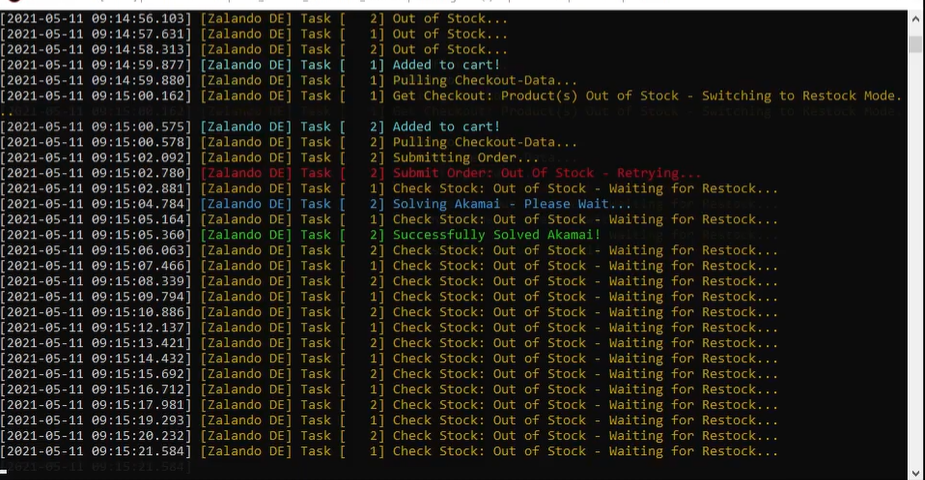
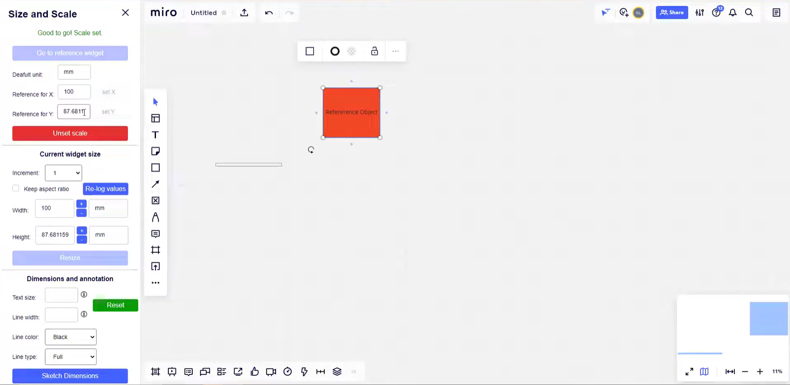

┌──────┐
│ >_ │
└──────┘
Web Automation ToolNástroj na webovú automatizáciu
A terminal based web automation tool built in Go, allowing users to create and run scripts that interact with websites for tasks like data scraping, form submission, and bulk purchases with support for headless browser automation and proxy rotation.
Terminálový nástroj na webovú automatizáciu napísaný v Go. Umožňuje vytvárať a spúšťať skripty na interakciu s webovými stránkami — scraping dát, odosielanie formulárov, hromadné nákupy — s podporou bezhlavého prehliadača a rotácie proxy serverov.

Node JS
SQL
Puppeteer
┌──┬──┐
│▪▪│ │
└──┴──┘
Online Whiteboard PluginsPluginy pre online whiteboard
Created several plugins for the Miro online whiteboard platform, including a layer management plugin, a metric unit converter from the whiteboard's internal units, for our client interaction team to streamline their workflow and enhance their whiteboard experience.
Séria pluginov pre online whiteboard platformu Miro — vrátane pluginu na správu vrstiev a konvertora jednotiek z interných jednotiek whiteboardu na metricke. Určené pre tím klientskej interakcie na zefektívnenie pracovného toku s zakaznikom.

Vanilla JS
REST API
╔═════╗
║ ◉ ◉ ║
╚═════╝
Face Recognition for University GroundsRozpoznávanie tvárí pre areál univerzity
tensorflow.js and WebAssembly based face recognition system for university campus security, allowing real-time identification of individuals from security camera feeds with high accuracy and low latency.
Systém rozpoznávania tvárí pre zabezpečenie univerzitného kampusu postavený na tensorflow.js a WebAssembly. Umožňuje identifikáciu osôb v reálnom čase zo záberov bezpečnostných kamier s vysokou presnosťou a nízkou latenciou.
Tensorflow
WebAssembly
Rust
┌────────┐
│[✓] ─── │
│[✓] ─── │
│[!] ─── │
└────────┘
Workforce Compliance SystemSystém správy zamestnancov
Internal system tracking employee equipment, health checks, and training certifications — with expiry monitoring and automated notifications to prompt renewals before deadlines. Synced daily with Windows AD and LDAP to automatically onboard new hires and deactivate leavers. A hierarchy script grants managers and directors role-appropriate edit and create permissions.
Interný systém na sledovanie vybavenia zamestnancov, zdravotných prehliadok a školení — s monitoringom platností a automatickými notifikáciami pred vypršaním. Denná synchronizácia s Windows AD a LDAP automaticky pridáva nových zamestnancov a deaktivuje odchádzajúcich. Hierarchický skript priraďuje manažérom a riaditeľom práva na úpravu a vytváranie záznamov.
PHP
Nginx
Docker
LDAP / AD
Bash - Cron
Git Version control w/ CI/CD pipeline
┌────────┐
│● ● ● │
├────────┤
│≡ ████ │
└────────┘
Sports Games Event WebsiteWebová stránka Športových hier
Public website for the XXXII Športové Hry SHMÚ & ČHMÚ 2026 — an inter-institute multi-sport competition between Slovak and Czech hydrometeorological institutes. Features registration, gallery, and a live results page backed by a custom admin panel where admins input match results. The results engine automatically calculates group stage standings, playoff brackets, and combined team point totals across all sports.
Webová stránka pre XXXII Športové Hry SHMÚ & ČHMÚ 2026 — medziústavné viacšportové podujatie slovenského a českého hydrometeorologického ústavu. Obsahuje registráciu, galériu a živú stránku výsledkov napojenú na administrátorský panel. Výsledkový engine automaticky vypočítava tabuľky skupinovej fázy, play-off a celkové bodové hodnotenie tímov naprieč všetkými športmi.
PHP
SQL
Appache
┌──────┐
│ ♠ ♣ │
│ ♥ ♦ │
└──────┘
MTG Board Game SimulatorSimulátor doskovej hry MTG
A Magic: The Gathering card game Momir format simulator, keeping a up-to-date internal card DB of 20,000+ cards, utilizing a custom small factor PC setup with a small form factor printer.
Simulátor formátu Momir pre kartovú hru Magic: The Gathering s priebežne aktualizovanou internou databázou 20 000+ kariet. Využíva vlastné PC riešenie s mATX architektúrou a integrovanou kompaktnou tlačiarňou.
Python
Shell script
CLI